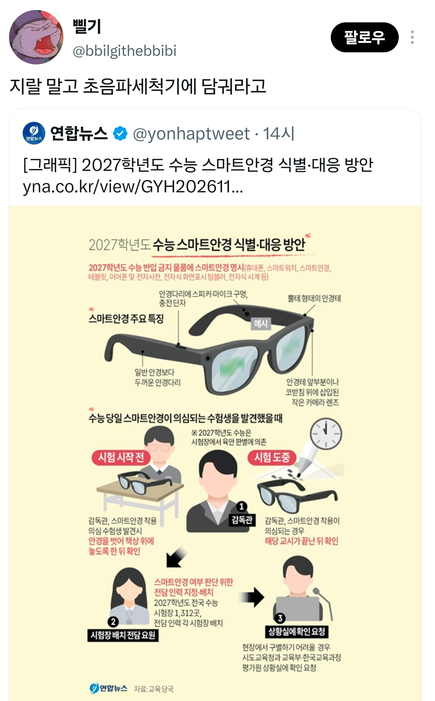

78 · 7 · 8 시간 전 · 원문

속이 뻥
수집 당시 댓글 7개
세금공제된115억 · 7 시간 전
나 지난달에 공무직 시험봤는데 스마트안경 검사하던데. 내가 안경을 안쓰고 가서 정확히 어떻게 진행했는지는 기억 안나는데 스마트 안경을 이용한 부정행위가 속출한다고 봤음
까치산 · 7 시간 전
안경어디서사냐
횡문근융해증 · 7 시간 전
곧 임용시험도있는데 많이나오겠다
다주택중과세폐지 · 4 시간 전
그냥 관심만 있어도 막을수있음
문제는 감독관이 그렇게까지 하지 않는사람이 대부분이라는거
적발하면 적어도 포상은 줘야함.
끝에만혀돌려줘 · 2 시간 전
보청기달린 선글은 통과=
잠시만요 · 13 분 전
법적으로 ai 안경은 사용시마다 30초 광고를 넣는거지!
차가운밤 · 12 분 전
방수되는거 아니야?
나 지난달에 공무직 시험봤는데 스마트안경 검사하던데. 내가 안경을 안쓰고 가서 정확히 어떻게 진행했는지는 기억 안나는데 스마트 안경을 이용한 부정행위가 속출한다고 봤음